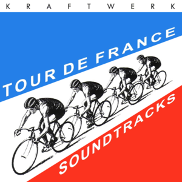
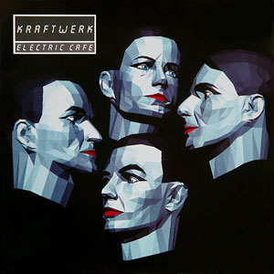
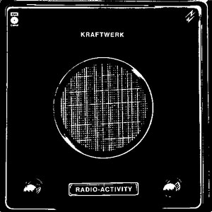
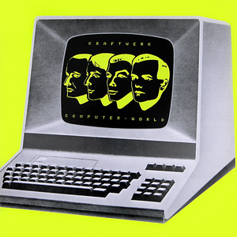
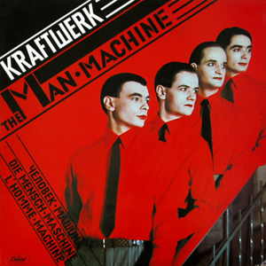
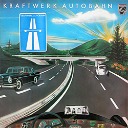
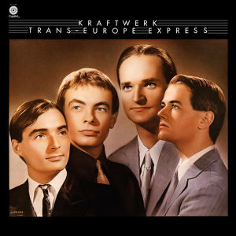

Kraftwerk - Worst to Best
posted 28/04/21
Kraftwerk are a band who formed in the 70s, and proceeded to revolutionize the music industry as one of the first electronic acts, coming out with several influential albums in the 70s. They were formed by Ralf Hutter and Florian Schneider, who recorded 3 albums together in the early 70s: Kraftwerk, Kraftwerk 2, and Ralf und Florian. These albums are very krautrock inspired, and quite different from what the band would go on to record in the late 70s. While there are some great ideas scattered across these early albums, they are much more improvisational and aimess in nature, and are quite rough around the edges. They are definitely not representative of who Kraftwerk were as a band, to the point where even they really don’t consider these albums as part of their catalog. I won’t be covering these, as for me their discography really begins with 1974’s Autobahn.
Kraftwerk had shuffled musicians around Ralf and Florian previously, but were eventually joined by Wolfgang Flur and Karl Bartos, forming the Kraftwerk we have all come to love. With a couple of exceptions (Tour de France, and Autobahn which was recorded before Karl Bartos joined), this 4-man group recorded the core discography which I will be reviewing here, so let’s get into it. I should note that I will be reviewing the English versions of these albums, as I don’t speak German (unfortunately, I should really learn it), I hope that doesn’t make me any less of a Kraftwerk fan.
As you will quickly figure out, I have absolutely no technical knowledge on music, which makes it especially difficult to discuss electronic music. As such, I have no idea what to call certain sonic elements of tracks, but hopefully I can describe what I’m hearing well enough.

7. Tour de France - 5/10
Kraftwerk released Tour de France in 2003, nearly two decades after their previous effort, Electric Cafe. And while some of the tracks here show that Kraftwerk have still got it, overall this album is incredibly inconsistent.
The first 5 tracks of Tour de France are pretty much just one long adventure as they flow pretty seamlessly together, with each stage feeling a leg of the Tour de France race. This is surely not anything groundbreaking for Kraftwerk, but it’s vibrant and energetic, with great pacing across the 5 tracks. Honestly, these 5 tracks should have just been released as an EP, and I would have loved it so much more.
But after “Chrono”, most of what Tour de France has to offer here either drags on for far too long (“Vitamin”, “Elektro Kardiogramm”, “La Forme”) or sounds clunky and underdeveloped (“Titanium”). “Aero Dynamik” and “Tour de France” are alright with interesting ideas, but definitely don’t stack up to Kraftwerk’s other work.
Perhaps my 5/10 is a bit too harsh, given the praise I have given to the first 5 tracks, but overall this album is just very meh to me. Regardless, this is without a doubt one of Kraftwerk’s worst albums, and I think most would agree. I may start losing people on the next entry in the list though...

6. Electric Cafe - 5/10
I don’t think having this at #6 is the unpopular opinion, in fact I know that most Kraftwerk fans would have this in a similar rank on their lists. What I think may raise eyebrows though is the 5/10, but I’ll explain why I think this is not a good Kraftwerk album.
Like with Tour de France, the main issue here is the inconsistency. I’m not a huge fan of the vocals on “Boing Boom Tschak”, but I can’t deny how catchy it is, and it doesn’t overstay its welcome, at just 3 minutes. And “Telephone Call”, which is easily the best track here, is Kraftwerk still at their best. The production here is varied and captivating throughout, the telephone operator sample is used really effectively, and the vocal performance is great. (I should note I do prefer the rendition on the remaster, with the shorter “Telephone Call” and “House Phone”, though the original is still great).
Unfortunately, that’s really it for the praise I have to give this album. There surely some cool ideas scattered across the rest of this album, but none of them form cohesive, well-paced songs. Some of the instrumental portions of “Techno Pop” are interesting, but the “music, non stop, techno pop” vocals are honestly laughable, the track goes on for far too long. In “Musique Non Stop”, these issues are even more apparent, as the text-to-speech “music, non-stop” is just clunky and jarring, and honestly doesn’t belong anywhere near music in general. Relying on these text-to-speech sounding vocals makes Electric Cafe sound super dated, and I can only laugh and roll my eyes when I hear them.
And then there’s “Sex Object”. The strings here paint this track as super dramatic, but the lyrics are super corny and on the nose, and the sampled vocals (“yes, yes, yes, no, no, no, perhaps”, you know what I’m referring to) don’t fit at all. This may very well be Kraftwerk’s worst song, I can’t actually make it through the entire track without laughing as I question where it all went wrong.
So Electric Cafe has a few great moments, some good ideas here and there, and some downright terrible and/or boring tracks. Yeah, I think a 5 is appropriate. “Telephone Call” is the only reason this isn’t below Tour de France, but it was honestly a toss up between the two.
Thankfully, none of the subsequent placements on this list are going to be disagreeable, as all of my opinions on their classic work are pretty predictable and common. :)

5. Radio-Activity - 6/10
I may be underrating this album a bit in many Kraftwerk fans’ eyes, but I think Radio-Activity is a mess, unsure of what direction it wants to go in. The fully formed songs here are great, the standouts here are “Radioactivity”, “Airwaves”, and “Antenna”, which see Kraftwerk building on “Autobahn” to make melodious, electronic tunes. And while I think these tracks are a bit rough around the edges (they have been more fully fleshed out and expanded upon in 3-D The Catalogue, where I think they sound much better), they are full of energy and tie back to the theme of energy and wave transmission pretty well. But they are surrounded by what seems like an album full of experiments and transition pieces. Radio-Activity doesn’t flow all that well as an album, as it feels like jumping from one experiment to the next, centered around the aforementioned 3 tracks. “Radioland” and “Ohm Sweet Ohm” also serve as centerpiece tracks for the album, but the former feels like a transition piece that drags on far too long, and the latter features manipulated vocals at the beginning that I just don’t care for.
Radio-Activity is an album with some great ideas, but if I had to describe it in one word, that would be unrefined.

4. Computer World - 7/10
W h o o p s.
I know what I said earlier, I guess I just like riling people up with my contrarian opinions. Though I’m not just arguing this to be contrarian, I genuinely don’t get the hype surrounding Computer World. Seeing where others rank this album was jaw dropping to me, as I think this is a clear notch below the rest of the entries on this list. There are some great songs here, don’t get me wrong. But this is not as thematically or sonically cohesive as Trans-Europe Express or Autobahn, all of the albums higher on this list are far more consistent, with more standout moments.
The standouts here for me are “Computer World”, “Numbers”, and “Home Computer”. “Computer World” is perhaps the best track on the record, the production here is melodious and energetic, and the accompanying vocals are fantastic (especially in the chorus). “Numbers” features more great production, though this time more unconventional and cold compared to the warm melodious tune of “Computer World”. This track is a quick and weird (in the best way possible) addition to the album, and it helps paint a dystopian, electronic atmosphere that ties back to the album’s themes of the ubiquity of computers in our society. “Home Computer” is longer and even less conventional than “Numbers”, but shares a lot of its great qualities. I especially love the way this track closes in the final minute, as it descends into what I’ll call “percussive blips” (see, I told you I don’t know what the hell I’m talking about).
But this album is a bit inconsistent, and not Kraftwerk’s most cohesive effort. While the ubiquity of computers is highlighted throughout the album’s lyrical and production choices, there is nothing tying these tracks together as more than just singles. Conceptually, there is no narrative or link between tracks, and while sonically there are signs of cohesion, the album doesn’t flow particularly well outside of the “Numbers” to “Computer World 2” transition.
Now in regards to the inconsistency, “Pocket Calculator” and “Computer Love” are nice tunes with good vocal performances, but they just drag on for too long, with production that is not captivating or varied enough to justify the track length. And “It’s More Fun to Compute” is the singular reason why this is a 7, and not an 8. The vocals and production at the beginning of this track are so jarring and off-putting, detracting from the rest of the track, which shares its issues with the two aforementioned tracks.
Track for track, this is still Kraftwerk near their peak. Not quite there, but not quite fallen off either as seen on Electric Cafe. But as an album, the lack of consistency, alright but not great thematic cohesion, and underwhelming flow make this a step down from Kraftwerk’s best work.

3. The Man Machine - 8/10
This is not Kraftwerk’s best work, and I will shout it as loud as I can for the rest of my life. There are two main issues I have with this record, or well issues is a bit of a harsh word to use here. This is a great record, and the standout tracks here clearly set it above the rest of their work. But it isn’t as consistently excellent as the next two albums on this list, and like Computer World, it doesn’t really flow all that well sonically or conceptually. These are just singles inspired by technological innovation and its effects on society, but these ideas aren’t explored in depth outside of a couple of lines in “The Robots” and “The Model”. I love “Spacelab” and “Metropolis”, both are incredible instrumental (predominantly) tracks, but do they really serve to improve the flow of the album or call back to the album’s themes, especially when they’re back to back in the tracklist?
“Neon Lights” is perhaps my favorite track here, as it perfectly balances the long, sprawling, production with its brief, infrequent lyrics, but still captures the image of a vibrant, industrialized city at night beautifully. “And at the fall of night/This city’s made of light” in conjunction with the production succinctly calls back to the album’s themes in a way that “Spacelab” and “Metropolis” don’t quite achieve.
But that being said, “Spacelab” and “Metropolis” still feature fantastic production and are paced really well, which I can’t say as confidently for “The Robots” and “The Man Machine”. Both of these tracks feel a bit clunky and poorly paced, and each have their own issues that stick out to me and drag them down. With “The Robots”, it’s the vocal performance. I get the point, they are the robots, I just don’t think it works particularly well here. In contrast, the vocals on “The Man Machine” are good, but I don’t enjoy the plucky synths (I think they’re synths?? I warned you I don’t know shit) on this track. “The Man Machine” feels super long and clunky, and it mostly comes down to the production and the song structure that make the track relatively bland and unvaried.
So I hope I’ve convinced you that Kraftwerk can do better than this (probably not but oh well), but for even those that do agree, the fact that The Man Machine is at #3 and not #2 may be surprising. So let’s get to Kraftwerk’s first masterpiece.

2. Autobahn - 9/10
Yes, you read that right. Autobahn is better than The Man Machine. I have very minor gripes with this record, but for the most part Autobahn is an adventure that is almost unparalleled. So let’s drive down the Autobahn, and I will attempt to explain the genius behind this record.
The first track here is the 23-minute long “Autobahn”, and I probably don’t have to explain this one. “Autobahn” is 23-minutes of pure bliss that you feel driving down the Autobahn, perfectly captured with the incredible production and whimsical vocal performance on the simple, yet effective chorus: “The fun, fun, fun of the Autobahn”. The track is filled with twists and turns, much like various twists and turns on a highway, each ensuring that the track never gets stale even at 23 minutes long. In regards to the concept and flow of this album, “Autobahn” is pretty much the exuberant joy of cruising down the Autobahn in the summer afternoon, and makes for a perfect side A to complement the rest of the album.
“Kometenmelodie 1” and “Kometenmelodie 2” parallel “Autobahn” wonderfully, contrasting its gleeful vocals and many structural twists and turns with more ambient soundscapes. I see these tracks as depicting nighttime driving and gazing out the window to the starry (and comet filled, hence “Comet Melody”) night sky. “Kometenmelodie 1” is a darker, more apprehensive approach to the nighttime driving and it sets the stage for the nighttime portion of the album effectively. “Kometenmelodie 2” then segues beautifully from the previous track, with its shimmering production that highlights the beauty of the night sky and the stars that light the way. While both of these tracks on their own may seemingly drag on for a long time, within the flow of the album they work really well, balancing each other to paint the full picture of the dark, yet still brightly lit sky.
And then we reach “Mitternacht”, my personal favorite track on the album, and one of the most hauntingly beautiful tracks I’ve ever heard. We’ve seemingly moved from a beautiful nightscape lit by stars to a pitch black midnight, and driving down this road is truly unsettling. The way the track begins introduces a caution and fear in the listener, leaving them wary of when something will jump out at them. And then a foreboding instrumental takes over the track, introducing the aforementioned haunting atmosphere, filled with interjections that keep the listener on their toes throughout the track. “Mitternacht” then slowly dies down, ending the night and making way for the next track.
“Morgenspaziergang” sounds like a peaceful morning stroll (which I say partly because it’s called “morning stroll”), and it provides an ethereal ending to this brilliant album. The flutes in this track are so light and pretty, and the track overall feels much more relaxed and ambient than the A-side “Autobahn”. We’ve returned to the morning, but we’ve left the car behind, and the listener is treated to a calmer exploration of the bright morning.
The thing that really brings this album together and elevates it above the previous entries here is its flow, both sonically and thematically. Autobahn may not have as much to say, but the journey it takes the listener on is unlike any other. Together these tracks take the listener on a daylong adventure across the Autobahn, and it’s filled with twists and turns that fill this album with charm. Autobahn is absolutely brilliant, and there’s only one album Kraftwerk has made that tops it. And so now, what we’ve all been expecting at the #1 spot (no, not The Man Machine)...

1. Trans Europe Express - 9/10
Trans Europe Express is Kraftwerk’s magnum opus, don’t let anyone tell you otherwise. Like Autobahn, Trans Europe Express takes the listener on a journey, except this time we’re travelling across the vast expanse of Europe. Except this time, the album is more than just a journey for the listener, as the lyrics across the album discuss themes of identity. Despite having proven themselves with Autobahn, it seems as if Kraftwerk were still looking for their identity as a band, and took a journey throughout Europe to evaluate their mark on the world of music. Their struggles with their identity are wonderfully captured here as the band travels along the Trans Europe Express, so let’s dive right into the fantastic opener.
“Europe Endless” begins slowly, as the Trans Europe Express accelerates, before breaking out into its joyful main melody which celebrates the vast expanse of Europe. The vocal performance on this track is perhaps one of Kraftwerk’s best, and while the lyrics here are simple, they perfectly complement the lightness and exuberance of the instrumentation to paint a shining picture of Europe. There are just enough twists and turns throughout the track to ensure that the 10-minute track never drags on, and the bright production keeps you smiling with glee across the whole journey. “Europe Endless” is one of Kraftwerk’s finest songs, and it works as the perfect opener to ease the listener into the journey Kraftwerk will take.
And then we’re thrown right into “The Hall of Mirrors”, which begins with...what I’ll call spliced up synths, because I don’t know how to properly describe it. In any case, “The Hall of Mirrors” sees the tone of the album starkly shift as we’re now thrust into the identity crisis Kraftwerk face here. The production here is simple, yet very effectively foreboding throughout most of the track, allowing for the lyrics to shine in amongst the dark, depressive atmosphere. And the lyrics here are Kraftwerk’s best, simple as always, but still effective. From the first line in each chorus, “Even the greatest stars”, we see Kraftwerk bringing themselves (and every other artist) down to Earth and humanizing themselves. After all, Kraftwerk are just like us, people who continue to grow and aspire to find their place in the world. The rest of the lyrics are centered around the looking glass, or mirror, as Kraftwerk looks to evaluate themselves. We see them struggling to do so, with the lines “Sometimes he saw his real face/Sometimes he saw stranger at his place”, “Even the greatest stars/Dislike themselves in the looking glass”, and my personal favorite “He fell in love with the image of himself/And suddenly the picture was distorted”. The loud, abrasive production following that last line really captures the distortion depicted in the lyrics, and drives home the difficulty Kraftwerk are having with their identity. The track does turn around towards the end though, as Kraftwerk discuss “changing themselves” and “fixing their face” in the mirror, showing hope for Kraftwerk after all. “The Hall of Mirrors” is my favorite Kraftwerk track, one of my favorite tracks ever by any artist, as it introduces us to the identity crisis Kraftwerk experience beautifully.
“Showroom Dummies”, despite what you would think from its title, uses its lyrics to further humanize Kraftwerk, and depict the struggles they experience as they feel all of the eyes of the world on them. Kraftwerk seemingly feel dehumanized as performers and artists, as people are purely concerned with what they project to the rest of the world, akin to a mannequin. The lyric “We look around/And change our pose” also captures the struggles of fitting in, as one feels limited to projecting only what conforms to societal norms. Like “The Hall of Mirrors”, lyrically “Showroom Dummies” takes a turn towards the end, as Kraftwerk break out of their glass display and head to a club to experience life for themselves, again showing a sign of good to come. The production here is cold like “The Hall of Mirrors”, albeit with a bit more levity, which certainly benefits the album’s pacing. “Showroom Dummies” is another incredible track that fits right in with the rest of the album, and the cold, sharp (sorry I don’t know how to describe this better) production works perfectly with the next track.
“Trans Europe Express” approaches the journey across Europe taken in “Europe Endless” from a different angle, this time tying together the exploration of Europe with the formation of their identity addressed in the previous two tracks. I’ll get to the cold, mechanical production in a bit, as it ties into my commentary on the next two tracks. But I first want to discuss the key line here, one that may require a bit of context: “From station to station, back to Dusseldorf city/Meet Iggy Pop, and David Bowie”. In 1977, Bowie and Iggy Pop had moved to Berlin to kick their drug habits and take control of their careers and lives, likely experiencing the same issues with identity Kraftwerk present on this record. In fact, “The Hall of Mirrors” echoes themes of Low as it humanizes Bowie through its depiction of his depression, and Kraftwerk potentially found inspiration in the struggles of Bowie and Iggy Pop. And this is the crux of the album to me, by traveling across Europe, Kraftwerk were able to find inspiration and embark on the journey of establishing their identity.
“Metal on Metal” and “Abzug” continue the journey from “Trans Europe Express” seamlessly, forming a 14 minute long train ride which sees Kraftwerk questioning and subsequently establishing their identity, as I had discussed earlier. The cold, mechanical production of the “Trans Europe Express”/”Metal on Metal” pairing captures this struggle beautifully, likening it to the clanging of the train against its tracks, in a staccato, jarring fashion that translates this effectively without deterring the listener. The looming nature of “Metal on Metal” heightens this response, as if to convey the climax of this identity crisis Kraftwerk are facing, and it does spectacularly without overstaying its welcome. “Abzug” segues from here seamlessly, and introduces synths (again, sorry if this is the wrong term) which shift the tone from the darker moments on previous tracks. “Abzug” slowly brings us to the resolution of the journey, and while the tone here isn’t quite as happy as the next track, the synths add a sense of hopefulness that lifts this trifecta of tracks and brings it to its close. “Abzug” ends with the TEE screeching to a halt, and it perfectly closes the book on the journey of this album, bringing us to its conclusion.
And that conclusion, “Franz Schubert” and “Endless Endless”, builds off the instrumental from “Europe Endless” to recapture that joyful exuberance. However, the instrumental here is slightly altered, differentiating from the youthful whimsy of “Europe Endless” with a seemingly more refined, nuanced sound. I find this decision works very well to call back to the expansiveness of Europe, while maintaining a more introspective approach to assessing their happiness as a band, that works better as a conclusion following the previous tracks. I love the choice of the titles here, I think they make the tracks honestly. Celebrating Franz Schubert, an incredibly influential composer, likely speaks to the identity that Kraftwerk have formed for themselves: innovators. And rightfully so. I like that the album ends with “Endless Endless” as well, which is most likely a statement on their musical influence pervading across Europe, but could also allude to their music withstanding the test of time. Either way, these tracks together cement Kraftwerk’s identity as a band who can find happiness in their efforts to push the genre forward, and beautifully conclude the arduous journey that this album has taken us on.
The narrative of this album, as well its flow between tracks and unity in its cold, mechanical production, make this Kraftwerk’s magnum opus. Trans Europe Express is perhaps the greatest, most important electronic album I have ever heard, and it cemented Kraftwerk’s legacy as pioneers in the genre. It’s an absolutely brilliant album, and there’s no doubt in my mind that it is Kraftwerk’s best work.